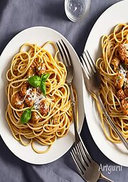

完成：當起司融化並均勻分佈在義大利麵上時，即可取出，撒上一些新鮮的香菜或巴西里，即可享用。

茄汁起司義大利麵的好處
茄汁起司義大利麵的組合有著許多令人喜愛的好處，以下是一些建議的好處：
- 均衡營養： 義大利麵提供豐富的碳水化合物，是身體主要的能量來源之一。茄汁則提供了維生素C、纖維和抗氧化劑。搭配起司則補充了蛋白質和鈣質，使整體餐飲更加均衡。
- 豐富的抗氧化劑： 茄子和蕃茄等蔬菜在茄汁中提供了豐富的抗氧化劑，有助於中和自由基，減緩細胞老化，並提升免疫系統的功能。
- 維生素和礦物質： 茄汁中的番茄含有豐富的維生素A、維生素 C、鉀和葉酸，這些有助於視力、免疫系統和細胞功能。義大利麵的鐵和鎂也是整體營養的一部分。
- 增進心血管健康： 茄汁內的茄紅素被認為對心血管健康有益。此外，橄欖油的添加可能有助於維持良好的膽固醇水平。
- 容易製作： 茄汁起司義大利麵是一道相對簡單且快速的料理，適合忙碌的生活方式。您可以隨心所欲地加入其他新鮮的蔬菜或香草，增添風味和營養。